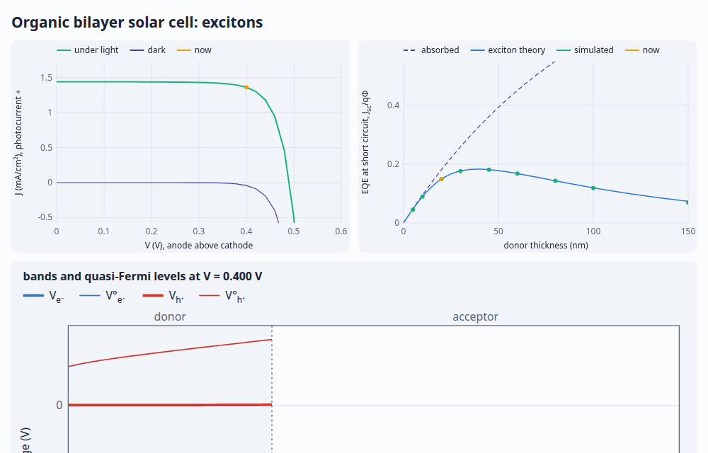
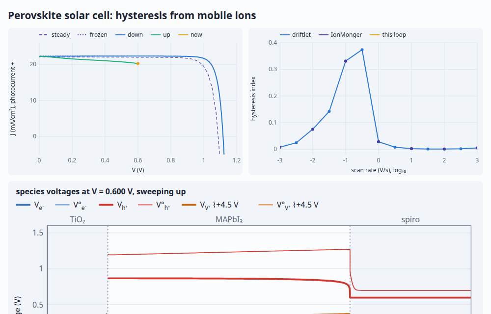
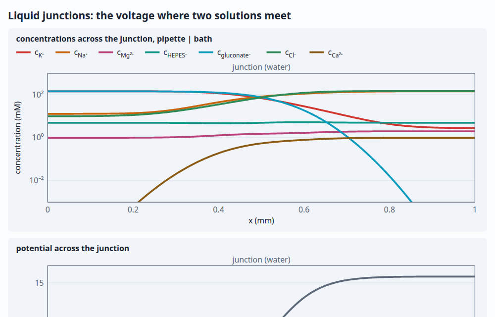
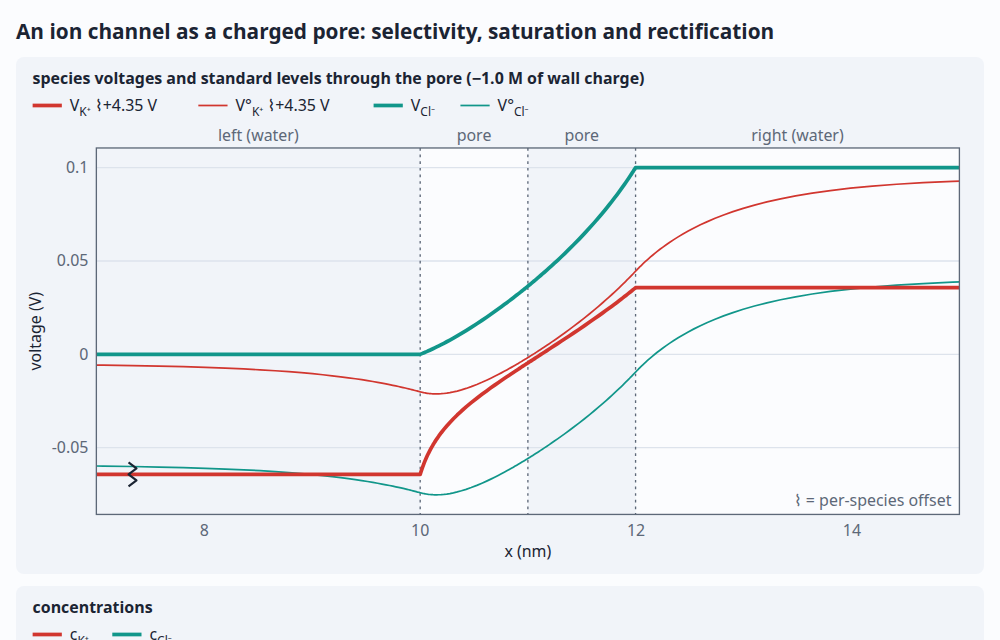

driftlet demos
Each page builds its device with driftlet/kit, solves it in your browser, and redraws as you move
the controls. It leads with what you'd measure (an I–V curve, a voltammogram, a discharge), mostly drawn
against closed-form theory as a check, and beneath it the level diagrams and profiles across the device, on
one x axis: species voltages, band edges, Fermi and redox levels, concentrations. Every page shows its whole
script at the bottom, as a worked example to copy.
Semiconductors

pn junctionQuasi-Fermi levels and band edges under bias; the I–V curve against Shockley, short diode to long.

Solar cellLight absorbed as it goes in, colour by colour: J–V and the spectral response against collection theory, blue lost in the emitter, the split quasi-Fermi levels.

Organic solar cellLight makes neutral excitons that diffuse to a donor/acceptor interface and split: Jsc against thickness and Voc by detailed balance, both against theory.

Perovskite hysteresisMobile iodide vacancies make the J–V curve depend on scan rate: the loop opening and closing, the vacancies' layers at each face, against IonMonger.

MOS capacitorAccumulation, depletion and inversion under a metal gate; C–V at any frequency, from the low-frequency curve to the high, as generation stops keeping up.
Electrochemistry

Cyclic voltammetryFe³⁺/Fe²⁺ at platinum: the Fermi level against the couple's redox level, Butler–Volmer kinetics and diffusion.

Daniell cellZn | Zn²⁺ | separator | Cu²⁺ | Cu through a load: a KCl salt bridge or a porous pot simulated ion by ion, leaking, and copper plating onto the zinc.

SaturationAg | AgNO₃ | Ag under a square wave: the salt piling up and reversing, live, and the current saturating at its limit. And a thin-film transistor pinching off, for the same reason.

ImpedanceThe same cell's spectrum against the finite-length Warburg, and its small-signal response inside, frequency by frequency.
Interfaces and materials

Liquid junctionsA patch pipette's junction growing from contact against Henderson and Planck, and a salt bridge whose charged frit turns into a membrane against a dilute sample.

Charged nanochannelA channel's charged walls: Donnan layers at each mouth that overlap in dilute salt, K⁺ selectivity, a conductance plateau against Teorell–Meyer–Sievers, and a bipolar channel that rectifies like a pn junction.

Resting potentialA cell membrane's leaks and the Na⁺/K⁺ pump: Vm against Mullins–Noda, each ion's driving force, and the run-down to Donnan equilibrium when the pump stops.

Ion-exchange membraneDonnan exclusion and permselectivity, ion by ion, against Teorell–Meyer–Sievers theory; unstirred layers.

Double layerIdeal against crowded (lattice-gas) ions at a blocking electrode, each against its closed-form theory; ion by ion.

Intercalation hostGalvanostatic cycling between cutoffs: the loop settling against a regular-solution OCV, Li⁺ and e⁻ level by level.